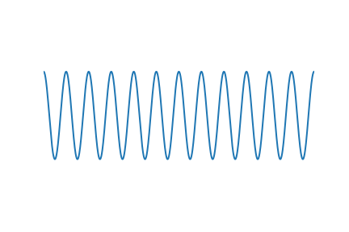
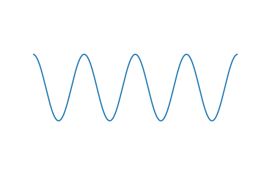
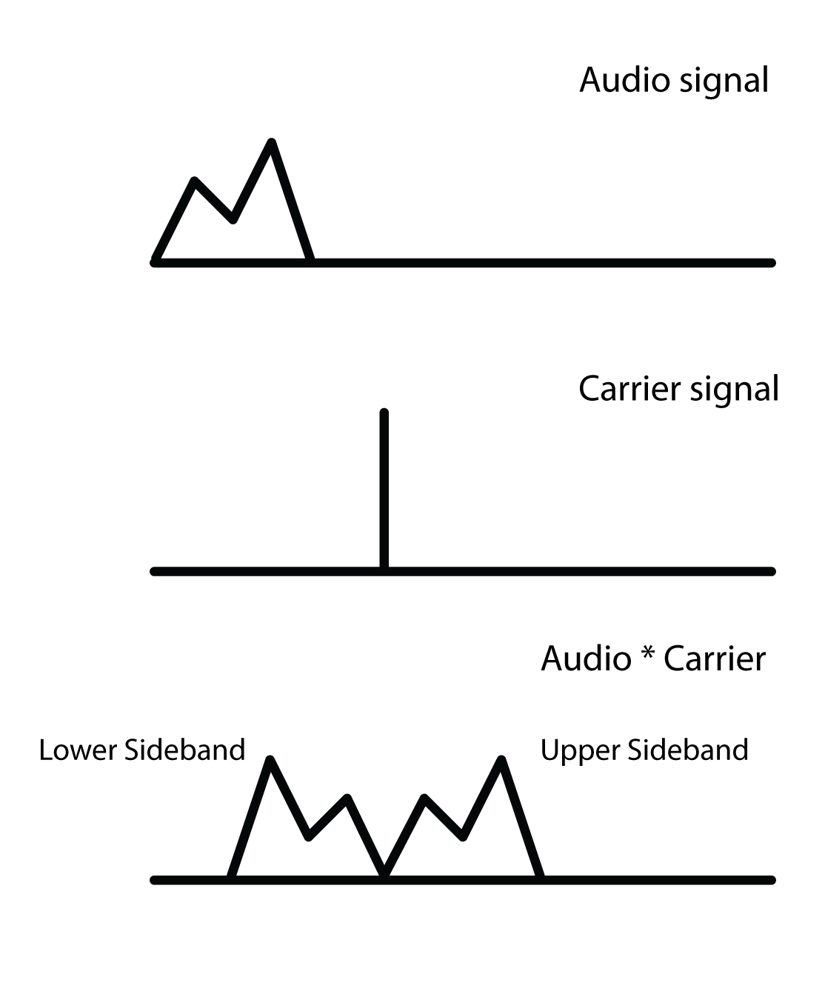
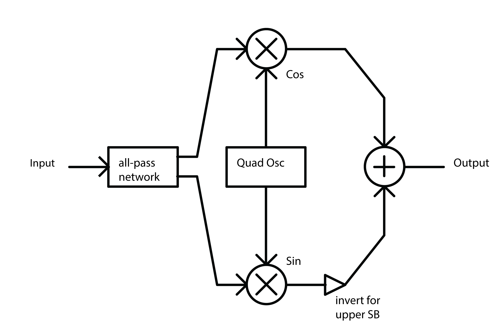

LZ
Table of Contents
Ring Modulation and Frequency Shifting
I started reading about this topic when looking for a computationally cheap way of doing frequency shifting. This is distinct from pitch shifting:
Pitch shifting is a more familiar effect. It moves the energy at all frequencies a proportional amount up or down. With pitch shifting the relative distance between each frequency is preserved. If you imagine a graphed frequency spectrum, with the horizontal axis laid out logarithmically in Hz, a pitch shifting spectrum will hold it's shape as is moves back or forth along the Hz axis. The auditory result is to preserve the timbre while changing the "note".
Frequency shifting, however, shifts each frequency in a signal by a set number of Hz. Since we don't perceive pitch linearly, this has a bizarre effect on the signal, totally transforming the timbre.
You could take a Fourier transform of the signal, apply the transformation to the spectrum, then re-synthesize the signal to get the result. However, this is computationally expensive and restrictive. Lucky, it turns out you can get a pretty good frequency shifting by exploiting the properties of ring modulation. We'll get to this in a bit. First let's think about some concepts. Humour me, there is a point to it all…
Rethinking basic operations
When we think about basic mathematical operations (addition, subtraction, multiplication, division), our instincts are based in experience of the natural world, apply mainly to the natural numbers. For example, when we are counting apples, we expect addition and multiplication to be operations that increase our number of apples, while subtraction and division are going to be decreasers. Obviously we know about the existence of negative numbers, fractions, and so on. Nonetheless, our instincts about these operations can occasionally be misleading when thinking about signals.
Clearly signals are not apples. They're more like boxes containing both apples and anti-apples. So it's worth taking a moment to rethink the basic operations.
Addition and Subtraction
Thinking about the boxes of apples and anti-apples, subtraction and addition are not really looking so opposite any more, in fact they are pretty similar in some senses. Say you have two signals: A = 440 hz sine wave and B = 100 hz sine wave. The outcome of adding B to A will be a signal with two frequencies (440 hz, 100 hz). The outcome of subtracting B from A will also be a signal with two frequencies. Sure, B will be inversed, but the auditory result is pretty similar to the addition.
Multiplication shows similarity
Rather than thinking of multiplication as an increaser, I like to visualise it as a test of similarity. It seems like a strange way to think of multiplication, but it is helpful. Say I want to test how similar some number A is to some number B. If B is identical to A then their product will be a perfect square of A. If B is the exact opposite to A then the product will be the negation of the perfect square of A. Likewise if B is similar bigger, or similar but smaller, and so on, we can see this in the product of the two numbers in relation a the square of A.
This sort of logic is most clear when thinking about the product of signed numbers:
- Negative * Negative = Positive (think of it as tested positive for having a similar sign)
- Negative * Positive = Negative (failed the test for sign similarity)
- Positive * Negative = Negative (same as above)
- Positive * Positive = Positive (similar sign. So positive similarity)
Adding and Multiplying signals
So, how about we multiply some signals together? This is effectively ring modulation. Ring modulation gets its name from the circular arrangement of diodes in its analog implementation (I understand nothing about electronics).
The result of ring modulating two signals is the sum and difference pair of each frequency across the two signals. For example, multiplying a 100 hz sine with a 440 hz sine will result in a signal with frequencies of 540 hz and 340 hz.
Okay, two thoughts. Firstly: Great! The sum component of the result looks like it will be very useful for our frequency shifter. Secondly: Why does it behave like this?
I think we can develop an instinct for why this happens. Before we start multiplying, first imagine summing two identical functions together. Let's imagine it with cos(x) for simplicity:
\[y = \cos(x) + \cos(x) = 2\cos(x)\]
Since our two functions line up perfectly, we've just doubled the amplitude.
How about if they are not exactly the same? If you've ever heard two notes of very similar but not identical pitches played at the same time you'll be familiar with the "beating" effect this creates. When they are both contributing the same sign the sound is louder, then they slip out of sync and it dips down. This all happens quite quickly and repetitively, causing the beating. Here are two non-identical sine waves added together:
\[y = \cos(5x) + \cos(6x)\]

You can see the "beating" effect visually here.
Okay, now on to multiplication. What happens if we multiply a signal by itself? Well, we know that like negative * negative = positive, and positive * positive = positive, so all the overlapping negative bits are going to become positive bits. So we'll double the frequency and shift everything up above the horizontal axis, like so:
\[y = \cos(6x) * \cos(6x)\]

Notice. We got the sum frequency sin(12x). The difference is zero.
Great. How about if we multiply two signals that are not identical? Let's have a look:
\[y = \cos(4x) * \cos(6x)\]

Look carefully and you'll see that whenever ether of the input signals approaches 0 it pulls the resulting output towards 0. When the two input signals closely match each other, the output is a high, positive value. When they are very dissimilar the output is a high negative value. As discussed above, think of multiplication as a test of similarity.
Let's see if we can reproduce the same signal with addition. If we take the sum and the difference of the signals above…
\[y = \cos(2x) + \cos(10x)\]

Pretty similar, you can see the same frequencies at work there. However if we scale it down by a half they look very similar indeed:
\[y = [\cos(10x) + \cos(2x) ] \frac{1}{2}\]

So, nothing formally proven here, but we can get a feel for why multiplication results in the sum and the difference of the input frequencies:
When multiplying two very similar sinusoids there will be a long expanse of relative similarity which gradually shifts into a long expanse of relative dissimilarity. That's what is causing the "difference" part of the output, which is at a low frequency because the two inputs are close in frequency. If the inputs were very dissimilar frequencies, the "beating" of the "difference" becomes faster. The "sum" part is due to both input frequencies constantly pulling the output towards and away from 0 at their own speed.
Let's get Triggy with it…
We can see the concept from above taking place in these trig identities.
\[\cos(\alpha)\cos(\beta) = \frac{1}{2} \cos(\alpha − \beta) + \frac{1}{2}\cos(\alpha + \beta)\]
\[\sin(\alpha)\sin(\beta) = \frac{1}{2} \cos(\alpha − \beta) − \frac{1}{2}\cos(\alpha + \beta)\]
\[\sin(\alpha)\cos(\beta) = \frac{1}{2} \sin(\alpha + \beta) + \frac{1}{2}\sin(\alpha − \beta)\]
\[\cos(\alpha)\sin(\beta) = \frac{1}{2} \sin(\alpha + \beta) − \frac{1}{2}\sin(\alpha − \beta)\]
Considering these identities you can see why I chose to use cosines in the examples above, it's the simplest version.
We'd like to be able to isolate the sums and differences in each of these. For these simple signals we can show how with a bit of rearrangement:
For example, take the first of the equations above:
\[\cos(\alpha)\cos(\beta) = \frac{1}{2} \cos(\alpha − \beta) + \frac{1}{2}\cos(\alpha + \beta)\]
\[\sin(\alpha)\sin(\beta) = \frac{1}{2} \cos(\alpha − \beta) − \frac{1}{2}\cos(\alpha + \beta)\]
We can isolate the \[cos(\alpha + \beta)\] term in the first equation like so:
\[\cos(\alpha)\cos(\beta) − \sin(\alpha)\sin(\beta)=\]
\[ \left [ \frac{1}{2} \cos(\alpha − \beta) + \frac{1}{2}\cos(\alpha + \beta) \right ] − \left [ \frac{1}{2} \cos(\alpha − \beta) − \frac{1}{2}\cos(\alpha + \beta) \right ] = \]
\[ \frac{1}{2} \cos(\alpha − \beta) + \frac{1}{2}\cos(\alpha + \beta) − \frac{1}{2} \cos(\alpha − \beta) + \frac{1}{2}\cos(\alpha + \beta) = \]
\[cos(\alpha +\beta)\]
That's all well and good. However, usually the signals we are processing will not be simple sinusoids. The above shows that we can isolate that sum part of the ring modulation, but only in these situations. We need a general way to isolate the sum part of any signal that has been multiplied by a carrier signal in order to have a precise frequency shifter.
SSB Modulation
Here we shift gears and start looking at this all in the frequency domain.
Single-sideband modulation. This is the term used in communications signal processing for what we are trying to do here. We want to think of our carrier signal in the frequency domain as a single line representing that frequency, since it's a sinusoid. Think of this as a center line. When we apply the carrier to our audio signal the outcome in the frequency domain will be distributed either side of that line. All the sum elements will shift above it, all the difference elements are subtracted away from it and are therefore flipped into the mirror image of the sum parts. These two sides of the output are called sidebands. We want to isolate the upper sideband.

From seeing this, your first instinct might be to use a high-pass to remove the lower sideband. This is an option, but it's a sloppy one. We want something more exact.
If we go back to the trig stuff above, we found that:
\[\cos(\alpha + \beta) = \cos(\alpha)\cos(\beta) − \sin(\alpha)\sin(\beta))\]
We can generalise this to any real signal like so: Multiply audio signal \[a\] by our carrier \[cos(\omega)\] and then subtracting that to a copy of our audio signal that is phase shifted by - 90 degrees and then multiplied by the carrier but in phase quadrature, so \[\sin(\omega)\].

The diagram above will create either the upper sideband or lower sideband depending on whether you add or subtract at the end.
Seems simple enough, but how to make that -90 degree phase shifted copy. We need to filter in some way to cause the phase shift. Conceptually, what we are after is a Hilbert Transform of our input signal.
Hilbert Transform
The Hilbert Transform takes a time domain signal and returns a time domain signal with all of the positive frequencies shifted - 90 degrees and all of the negative frequencies + 90 degrees. The maths of the Hilbert transform is quite complicated in my opinion. We're not going to dwell on it here for two reasons: it would be a tangential move from our topic, and more importantly because an ideal discrete time Hilbert filter is actually impossible to make. So we'll be approximating it. We can do this with a network of all-pass filters.
Phase shifting with All-Pass Filters
All-pass filters affect the phase spectrum of a signal without changing the overall energy at each frequency. The result by itself is barely audible at all since all the same frequencies are retained, but each part of the spectrum is a tiny bit delayed relative to the frequency. Since they work by delaying the signal, they affect high frequencies most and low frequencies least. This isn't ideal for us because we want to shift all frequencies evenly. The solution is to take our signal, split it into two and then use a whole bunch of all-passes on each one. Nether of the outputs will have a flat phase shift compared to the input, but they will be approximately 90 degrees phase from each other for a large part of the spectrum.

As for the layout of the all-pass network and the coefficients of the all-pass filters, it's largely a matter of trial and error. Thankfully the work has been done for us already. Olli Niemitalo's website provides one of the most efficient and simple arrangements floating around the web. Apparently the coefficients were found using a "genetic evolutionary algorithm". Sounds nerdy as fudge… Anyhow it works great.
The all-pass network uses four all-pass filters per branch, and then delays one of them by one sample. In the diagram above the lower branch is the delayed one. Notice that we invert the lower branch, before adding it (same as subtracting it). This is because we want the upper, not the lower sideband. Go back to the trig section of this post to see why to see why
Aliasing
If you've taken all the info above, put it together and build a frequency shifter then well done! You may be annoyed to hear some nasty noises at the top end, especially when you push the carrier frequency high. This is aliasing. The problem is that the "sum" part of the multiplication is making frequencies that are beyond Nyquist frequency. Your options are either low pass filter the signal before it goes in (lame), or to up-sample both the input signal and carrier oscillator by a factor of 2, then do the multiplication, THEN low-pass to kill everything over Nyquist (much cooler). That way you preserve as much as possible.
Gotchas and stuff
Some weird concepts in this one. I spent a long time being concerned about the two sidebands overlapping, and how could you possibly isolate them if they were. Turns out they don't, each frequency is added and subtracted from the carrier frequency, so they lie nicely either side of it.
Also, if you skimmed the trigonometry bit and then felt lost at the end then give it another pass. Once you see why the multiplication makes and sum and difference, and how either the sum or difference can be canceled out then the rest falls into place.
The Hilbert stuff. I feel kind of guilty for not writing more about it. It's interesting and pretty challenging for me to wrap my head around. I spent a lot of time researching this article by learning about the analytic signal and Hilbert transform, then wrote practically nothing about it. The reason is i decided that it was too great a deviation from the objective of the article. It's super interesting though. I recommend starting with this Wikipedia page.
Thanks for reading this. I hope it's pulled together all the key information from various sources so you can use it all as you will. As ever, I welcome corrections from spelling to calling me out on having it all totally wrong!